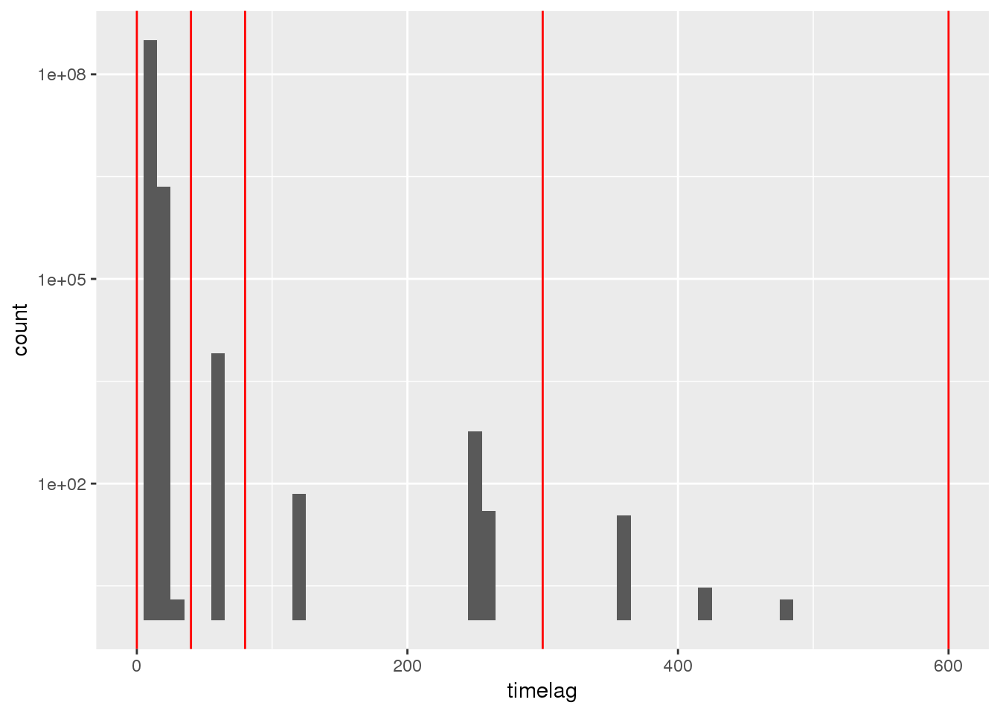
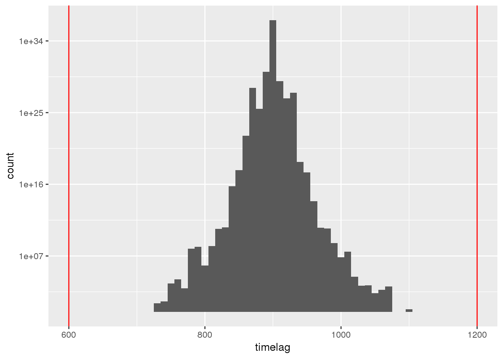
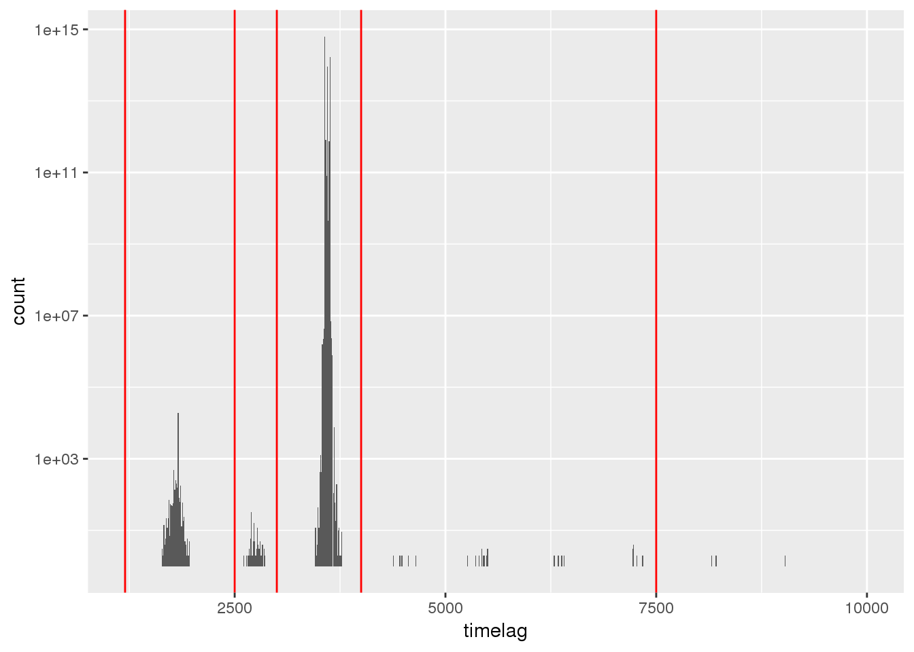
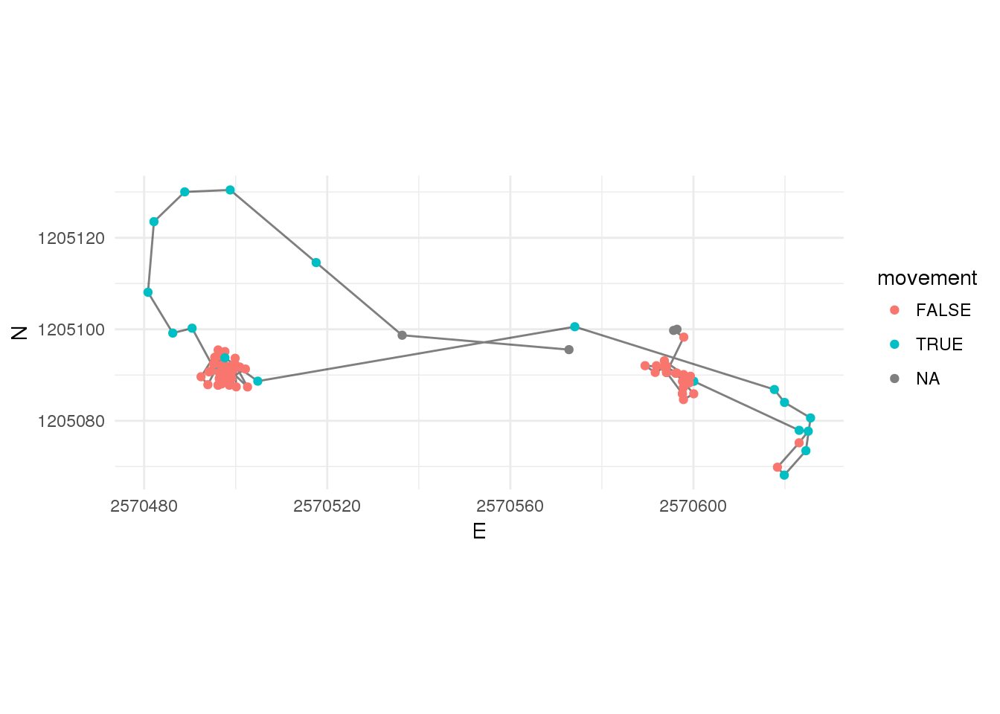
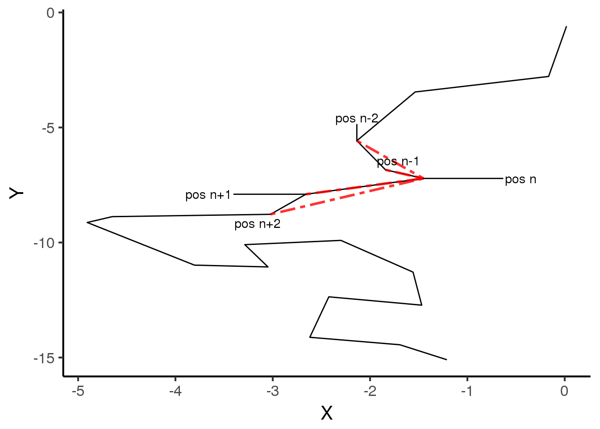
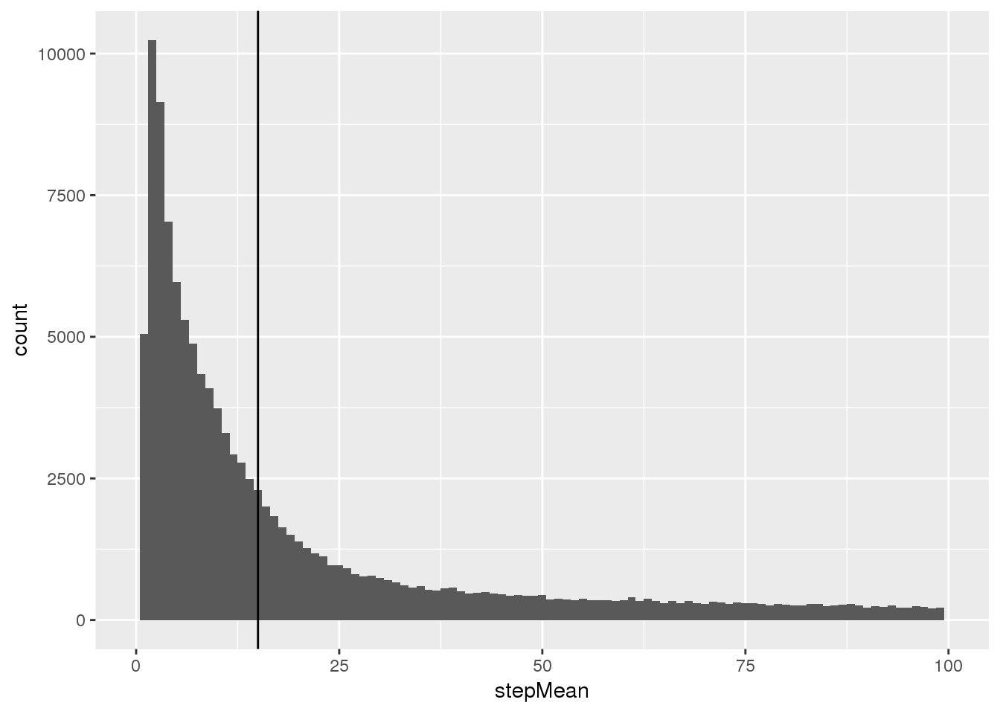
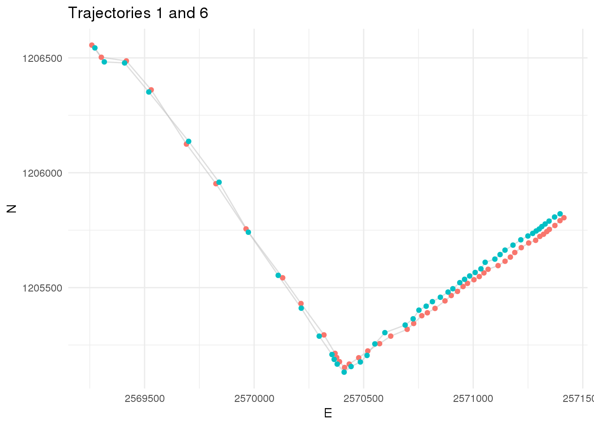
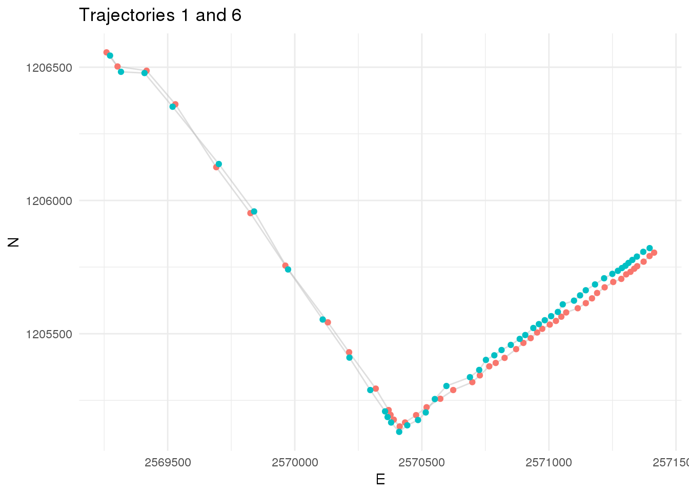
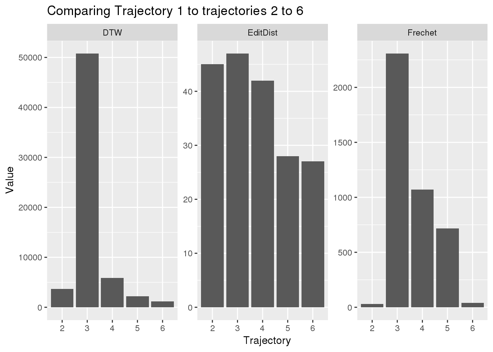

Exercise 3
Learning Outcomes
- You are able to segment a trajectory using Laube and Purves (2011)
- You are able to compute the similarity between given trajectories using the package
SimilarityMeasures. - You acquire further useful data processing skills.
Prerequisites
Readings Skills from “R for Data Science” (Wickham and Grolemund 2017):
- RS3.1 Chap1 Data visualization with
ggplot2(31, 3-35) - RS3.2 Chap5 Exploratory Data Analysis (28p, 81.109)
Readings Theory:
Alan Both (2018) A Comparative Analysis of Trajectory Similarity Measures: Recommendations for Selection and Use, in review with PLOS ONE, confidential.
Preperation
Install the following libraries:
install.packages("scales")
install.packages("leaflet")
install.packages("SimilarityMeasures")Open your R Project from last week. Either run your own script from last week or the following lines to bring the data to the form we need it for today exercise.
library(tidyverse)
library(CMAtools)
library(sf)
# Import as tibble
wildschwein_BE <- read_delim("../CMA_FS2018_Filestorage/wildschwein_BE.csv",",")
# Convert to sf-object
wildschwein_BE = st_as_sf(wildschwein_BE, coords = c("Long", "Lat"), crs = 4326,remove = FALSE)
# transform to CH1903 LV95
wildschwein_BE <- st_transform(wildschwein_BE, 2056)
# Add geometry as E/N integer Columns
wildschwein_BE <- st_coordinates(wildschwein_BE) %>%
cbind(wildschwein_BE,.) %>%
rename(E = X) %>%
rename(N = Y)
# Compute timelag, steplength and speed
wildschwein_BE <- wildschwein_BE %>%
group_by(TierID) %>%
mutate(
timelag = as.numeric(difftime(lead(DatetimeUTC),DatetimeUTC,units = "secs")),
steplength = euclid(lead(E, 1),lead(N, 1),E,N),
speed = steplength/timelag
)Demo: Tools for generic segmentation
Introducing cut() on dummy data
We often need to split a continuous variable into specific intervals. For this, the function cut()is very handy. We will introduce this function with a quick example. Assume we have a series of number that represent the ages of ten different people.
ages <- c(20,25,18,13,53,50,23,43,68,40)Let’s say we want to split this into equal intervals of 10 years.
breaks <- seq(0,50,10)
cut(ages,breaks = breaks)
## [1] (10,20] (20,30] (10,20] (10,20] <NA> (40,50] (20,30] (40,50]
## [9] <NA> (30,40]
## Levels: (0,10] (10,20] (20,30] (30,40] (40,50]Note:
- If a number does not fit within an interval defined by
breaks =,cut()will returnNA(as for example for the fifth element53). - The default
labelswith(and]might seem a little ugly and puzzling at first, but in fact they are a standard form of notating intervals in mathematics. - If you don’t like
(and], you can:- specify your own labels with the argument
labels =or - use the the function
labels_nicewe provide with theCMAtools-package
- specify your own labels with the argument
- Four thresholds (i.e.
breaks) return three intervals (i.e.lables), as shown below.
library(CMAtools)
breaks <- c(0,30,60,100)
cut(ages, breaks = breaks, labels = c("young","middle aged","old"))
## [1] young young young young middle aged
## [6] middle aged young middle aged old middle aged
## Levels: young middle aged old
cut(ages, breaks = breaks, labels = labels_nice(breaks))
## [1] 0-30 0-30 0-30 0-30 30-60 30-60 0-30 30-60 60-100 30-60
## Levels: 0-30 30-60 60-100Using cut() on timelag
Last week you will have noticed that we have different sampling intervals within our wild boar data (this can be represented with the timelag column). We have to segment our trajectories in such a way, that we can perform further analysis during specific sampling intervals only. If we measure speed, or turning angles, we have to be very clear on what temporal (an thus spatial) scale or granularity we are performing this analysis.
We therefore have to define thresholds to group segments with a similar sampling interval. If we explore the dataset in more detail (e.g. using histograms at different scales), we can choose reasonable threshold values to group the trajectories into different sampling intervals.
breaks <- c(0,40,80,300,600,1200,2500,3000,4000,7500,110000)
ggplot(wildschwein_BE, aes(timelag)) +
geom_histogram(binwidth = 10) +
lims(x = c(0,600)) +
scale_y_log10() +
geom_vline(xintercept = breaks, col = "red")
ggplot(wildschwein_BE, aes(timelag)) +
geom_histogram(binwidth = 10) +
lims(x = c(600,1200)) +
scale_y_log10() +
geom_vline(xintercept = breaks, col = "red")
ggplot(wildschwein_BE, aes(timelag)) +
geom_histogram(binwidth = 10) +
lims(x = c(1200,10000)) +
scale_y_log10() +
geom_vline(xintercept = breaks, col = "red")
wildschwein_BE <- wildschwein_BE %>%
group_by(TierID) %>%
mutate(
samplingInt = cut(timelag,breaks = breaks,labels = labels_nice(breaks))
) Generating unique ID on segments
Often it would be pretty handy if each sequence of positions with the same sampling interval had a unique ID. In this way, we could use this ID to filter the dataset for uninterrupted, “clean”, trajectories without varying sampling intervals and could also use the ID as a grouping variable.
This type of “grouping” similar values is a pretty common task that we often come across. So far, we’ve not found a good solution from available packages. We have therefore created our own function that we provide with the CMAtools package called number_groups(). This function takes a logical vector as an input and assigns subsequent TRUE values to the same group. Consider following example:
sample
## position samplingInt
## 1 pos1 60
## 2 pos2 60
## 3 pos3 60
## 4 pos4 120
## 5 pos5 120
## 6 pos6 120In this example, the first three positions belong to one group and the next three belong to a second group. number_groups() takes a logical vector which answers the following question for each value i: “Does the next value (i+1) belong to the same group as this value i?”. We first have to provide the answer to this question by using lead() again:
sample <- sample %>%
mutate(
samplingInt_control = samplingInt == lead(samplingInt,1),
samplingInt_group = number_groups(samplingInt_control,include_first_false = T)
)
sample
## position samplingInt samplingInt_control samplingInt_group
## 1 pos1 60 TRUE 1
## 2 pos2 60 TRUE 1
## 3 pos3 60 FALSE 1
## 4 pos4 120 TRUE 2
## 5 pos5 120 TRUE 2
## 6 pos6 120 NA 2Use ?number_groups to get more information.
Segmentation as in Laube & Purves (2011)
You’ve read Laube and Purves (2011) about segmenting trajectories. In the paper, they define “static” fixes as “those whose average Euclidean distance to other fixes inside a temporal window v is less than some threshold d”. This sounds more complicated than it is, the figure illustrates the method nicely.

Laube and Purves (2011): (a) Temporal representation of constant sample interval with associated temporal window v for three exemplary points; (b) Measurement of average distance in temporal window v to sample points in spatial representation; (c) Removal of all points where average distance is less than a given threshold, i.e. removal of static points; and (d) Removal of subtrajectories with less than a threshold temporal length
We will implement this method on some dummy data. Once you’ve grasped the idea on this simple data, you will implement it on the wild boar data.
set.seed(10)
X = cumsum(rnorm(20))
Y = cumsum(rnorm(20))
plot(X,Y, type = "l")
Assume the sampling interval is 5 minutes. If we take a temporal window of 20 minutes, that would mean we include 5 fixes into the calculation. We need to calculate the following Euclidean distances (pos representing a X,Y-position):
- pos[n-2] to pos[n]
- pos[n-1] to pos[n]
- pos[n] to pos[n+1]
- pos[n] to pos[n+2]
You can use the function euclid() to calculate the distances and dplyr functions lead()/lag() to create the necessary offsets. On our dummy data, we want to calculate the mean of the following distances (red, dotted lines).

nMinus2 <- euclid(lag(X, 2),lag(Y, 2),X,Y) # distance to pos. -10 minutes
nMinus1 <- euclid(lag(X, 1),lag(Y, 1),X,Y) # distance to pos. -5 minutes
nPlus1 <- euclid(X,Y,lead(X, 1),lead(Y, 1)) # distance to pos +5 mintues
nPlus2 <- euclid(X,Y,lead(X, 2),lead(Y, 2)) # distance to pos +10 minutes
# Use cbind to bind all rows to a matrix
distances <- cbind(nMinus2,nMinus1,nPlus1,nPlus2)
distances
## nMinus2 nMinus1 nPlus1 nPlus2
## [1,] NA NA 2.1930407 3.255812
## [2,] NA 2.1930407 1.5283951 3.418902
## [3,] 3.255812 1.5283951 2.2021404 3.397941
## [4,] 3.418902 2.2021404 1.2990315 1.776001
## [5,] 3.397941 1.2990315 0.5399653 1.340062
## [6,] 1.776001 0.5399653 1.3900290 2.214298
## [7,] 1.340062 1.3900290 0.9449451 2.215854
## [8,] 2.214298 0.9449451 1.6298525 1.916421
## [9,] 2.215854 1.6298525 0.3608126 2.270722
## [10,] 1.916421 0.3608126 2.1564489 2.679915
## [11,] 2.270722 2.1564489 0.7597903 1.030078
## [12,] 2.679915 0.7597903 0.9974347 1.375450
## [13,] 1.030078 0.9974347 1.0046117 2.101651
## [14,] 1.375450 1.0046117 1.5664940 2.935460
## [15,] 2.101651 1.5664940 1.4382922 1.378950
## [16,] 2.935460 1.4382922 1.0212859 1.809509
## [17,] 1.378950 1.0212859 1.7698785 2.207931
## [18,] 1.809509 1.7698785 0.9807744 1.713668
## [19,] 2.207931 0.9807744 0.8110503 NA
## [20,] 1.713668 0.8110503 NA NA
# This just gives us the overall mean
mean(distances, na.rm = T)
## [1] 1.719808
# We therefore need the function `rowMeans()`
rowmeans <- rowMeans(distances)
cbind(distances,rowmeans)
## nMinus2 nMinus1 nPlus1 nPlus2 rowmeans
## [1,] NA NA 2.1930407 3.255812 NA
## [2,] NA 2.1930407 1.5283951 3.418902 NA
## [3,] 3.255812 1.5283951 2.2021404 3.397941 2.596072
## [4,] 3.418902 2.2021404 1.2990315 1.776001 2.174019
## [5,] 3.397941 1.2990315 0.5399653 1.340062 1.644250
## [6,] 1.776001 0.5399653 1.3900290 2.214298 1.480073
## [7,] 1.340062 1.3900290 0.9449451 2.215854 1.472723
## [8,] 2.214298 0.9449451 1.6298525 1.916421 1.676379
## [9,] 2.215854 1.6298525 0.3608126 2.270722 1.619310
## [10,] 1.916421 0.3608126 2.1564489 2.679915 1.778399
## [11,] 2.270722 2.1564489 0.7597903 1.030078 1.554260
## [12,] 2.679915 0.7597903 0.9974347 1.375450 1.453147
## [13,] 1.030078 0.9974347 1.0046117 2.101651 1.283444
## [14,] 1.375450 1.0046117 1.5664940 2.935460 1.720504
## [15,] 2.101651 1.5664940 1.4382922 1.378950 1.621347
## [16,] 2.935460 1.4382922 1.0212859 1.809509 1.801137
## [17,] 1.378950 1.0212859 1.7698785 2.207931 1.594511
## [18,] 1.809509 1.7698785 0.9807744 1.713668 1.568457
## [19,] 2.207931 0.9807744 0.8110503 NA NA
## [20,] 1.713668 0.8110503 NA NA NA
# and if we put it all together:
rowMeans(
cbind(
euclid(lag(X, 2),lag(Y, 2),X,Y),
euclid(lag(X, 1),lag(Y, 1),X,Y),
euclid(X,Y,lead(X, 1),lead(Y, 1)),
euclid(X,Y,lead(X, 2),lead(Y, 2))
)
)
## [1] NA NA 2.596072 2.174019 1.644250 1.480073 1.472723
## [8] 1.676379 1.619310 1.778399 1.554260 1.453147 1.283444 1.720504
## [15] 1.621347 1.801137 1.594511 1.568457 NA NATasks
Task 1: Segmentation
Picking up from the previous input: we can now implement this algorithm using the dplyr / mutate() method. This might seem a little challenging at first, but if you have completed Task 2 from last week, it is quite easy. You can pass anything to a new column within mutate() as long as it is a vector of the same length as the original dataframe.
Task 2: Explore and visualize segementation
After calculating stepMean, you can explore the newly created Values stepMean using summary statistics (histograms, boxplot, summary()) and define a reasonable threshold value to differentiate between “stops” and “moves”. There is no “correct” way of doing this, specifying a threshold always depends on the question that needs to be answered.
## Min. 1st Qu. Median Mean 3rd Qu. Max. NA's
## 0.000 5.109 14.211 57.382 62.224 1811.620 40
Based on this data, I will go with a threshold value of 15. Apply your threshold on you data, then plot a subset of data to verify if the arbitrary threshold was a reasonable choice.
- You can apply the threshold with an
ifelse()statement with the condition (stepMean > 15), and two keywords when this condition is met (e.g. “move”) and when it’s not (e.g. “stop”). - sub-setting the first ten rows can be done with
[1:10,](don’t forget the comma!) - we have a couple of NA values in the beginning and end of each trajectory. Use
filter(!is.na(movement))to remove these values from the plot - like last week, add the trajectory using
geom_path()andgeom_point - add
coord_equal()

Task 3 (Optional): Plotting with leaflet
To be honest, exploring segmentation with ggplot is not very satisfying when exploring the data. Another great tool to visualize spatial data is leaflet. It’s not all that hard to create a leaflet plot, just take a look at the documentation and try it with our segmented wild boar data. Note: You can only pass the Lat/Long coordinates to leaflet, it cannot handle our E/N-data. This is one of the reasons we’ve held on to this column in the first place.
Task 4: Similarity measures
Import the dataset pedestrian.csv (available on moodle). It it a set of six similar, but varying trajectories from pedestrians walking on a path. We will analyse these trajectories with the package SimilarityMeasures, comparing trajectory 1 to the trajectories 2-6. In this task, explore these trajectories first and understand how the pedestrians moved.


 

Task 5: Calculate similarity
Calculate the similarity between trajectory 1 and trajectories 2-6. Visualize your results. Note: All functions in the package needs matrices as input, with one trajectory per matrix. Therefore, split the dataframe into 6 matrices with just two columns each, E and N. You can do this with the following code:
traj1 <- pedestrians %>%
filter(TrajID == 1) %>% # Change value 1 to 2,3 etc to
as.data.frame() %>% # filter for the other trajectories
dplyr::select(E,N) %>%
as.matrix()